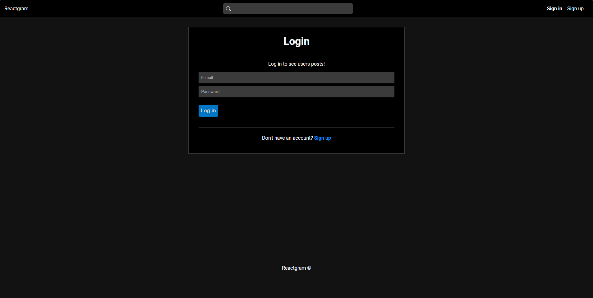
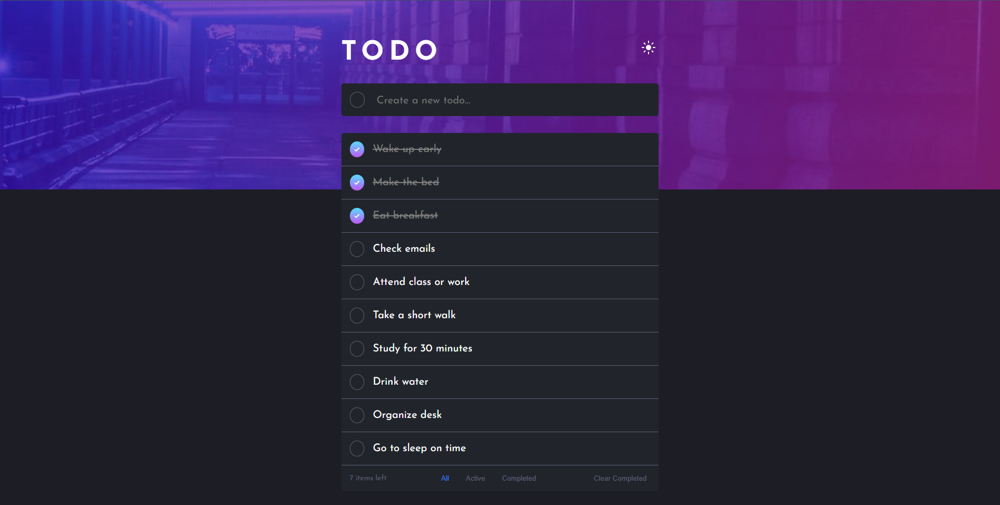

Luccas Fialho
Aspirante a Desenvolvedor Frontend Júnior com paixão por criar experiências web interativas e fáceis de usar.
Sobre mim
Olá! Meu nome é Luccas, tenho 24 anos e estou à procura de uma oportunidade no meio dev. Atualmente estudando framework React. Comprometido com o aprendizado e crescimento contínuos. Sempre fui fascinado por tecnologia e sempre tive curiosidade de buscar e entender como as coisas funcionam, tenho muita vontade de aprender e evoluir, tanto profissionalmente quanto como pessoa.
Projetos
Reactgram
Desenvolvi o Reactgram, uma aplicação fullstack inspirada no Instagram, utilizando a stack MERN (MongoDB, Express.js, React e Node.js). O projeto conta com autenticação de usuários, upload de fotos, curtidas, comentários, integrando frontend e backend de forma eficiente.
Repositório
React To-do App
Desenvolvi uma app para registro de tarefas diárias em React, para o desenvolvimento das minhas habilidades com hooks e armazenamento de dados com localstorage.
Repositório
Age Calculator App

Projeto feito para aprofundar os conhecimentos em JavaScript como manipulação de DOM e interação com o usuário através de forms e validação dos mesmos.
Repositório
Angular PSN Clone

Projeto de um clone do design da PSN Store para aprimorar os conhecimentos em Angular com TypeScript, como estruturação de projeto e componentização.
Repositório
C-137 Blog

Projeto de um blog com Angular e TypeScript onde aprendi muito sobre o pensamento angular, componentização e estrutuação do projeto assim como orientação a objeto com typescript.
Repositório
Número Secreto

Projeto feito para aprofundar os conhecimentos em JavaScript como manipulação de DOM e interação com o usuário, utilizando uma API de captação de som.
Repositório
Conhecimentos